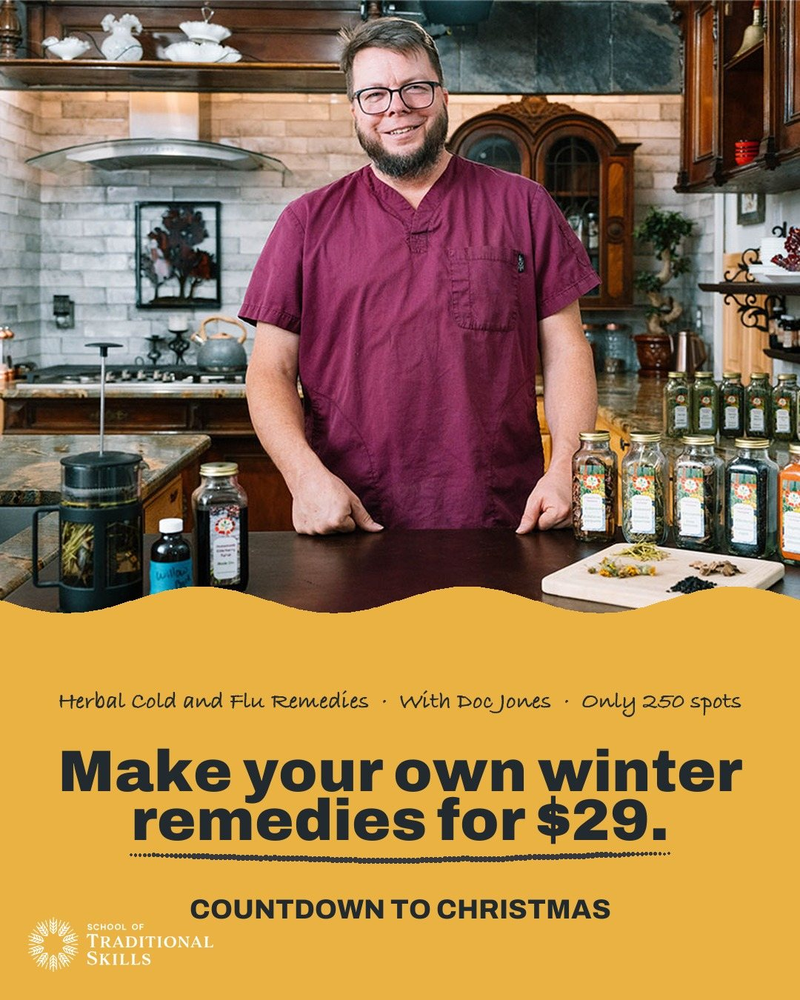

Countdown to Christmas 2026: new image versions for each ad
Every ad below keeps its approved copy word for word: the text above the image, the headline and the description, and the words on the image itself. What changes is the layout: every version is built on a layout that won in the 2026 Fall Summit, or on the simple text box from the blog ads. Each ad now has its approved image plus new versions on the same approved photo, or on another photo from the same class where marked. For Dehydrating, Pressure Canning, Raising Pastured Meat Chickens and Everyday Bread Baking, the small line of class details on the image is a little shorter than on the approved image ("They sell out fast." and the Countdown to Christmas label are left off); the class, teacher, $29 and 250 spots are all still there. Click any image to see it in the feed (click the feed image to open it full size). Hover or tap the ad text to read past "See more". Draft for review, not uploaded. The earlier mockup page is still at gostrategicmarketing-deployment.github.io/sts-christmas-2026-ad-mockups/.
Herbal Cold and Flu Remedies
Sponsored
Drugstore remedies add up fast, they're not always on the shelf when you need them, and it can leave you feeling like you're guessing in your own home. Families shouldn't have to depend on a store shelf to care for each other.
A couple of years ago, Carolyn and I invited Doc Jones to walk through our herb garden here in northern Idaho. He pointed out plant after plant he knows and uses, and honestly it was a really eye-opening afternoon.
Doc teaches Herbal Cold and Flu Remedies step by step: 16 herbs, how to grow or forage them, how to dose them safely, and how to make his elderberry syrup. You don't need all 16, just start with what you have. Get the class for $29 (usually $199), only 250 spots, and these classes sell out every year.

Showing: Approved sts2723
Traditional Sourdough
Sponsored
Most ...See more sourdough advice comes with so many rules that it feels like you need a science degree just to bake a loaf. Real bread shouldn't be that intimidating.
At our house, the best part of the holidays is family and friends around the table, taking time to give thanks. And there's just something about a warm kitchen with bread rising on the counter that makes it feel like home.
Maureen Diaz teaches Traditional Sourdough without the rigid rules: artisan loaves, soft sandwich bread, and every bit of your starter used up in waffles, tortillas, even cake. It's really doable. Get it for $29 (usually $199), only 250 spots, and these classes sell out every year.
Showing: Approved sts2724
Backyard Chickens
Sponsored
Most of ...See more the costly mistakes with chickens happen before you ever collect an egg, and the internet hands you ten different answers for every question. Raising a few hens shouldn't feel like a gamble.
I'll be honest with you: when Carolyn and I started out on raw land in 2007, we kept our chickens in confinement and bought everything in. I mean, this is embarrassing, but nobody showed us a better way. You don't have to learn it the hard way like we did.
Harvey Ussery's Backyard Chickens class walks you step by step from brooder setup to daily care, so you go into spring with real confidence. Get it for $29 (usually $199) or gift it to the chicken dreamer in your family. There are only 250 spots, and these classes sell out every year.
Showing: Approved sts2725
Dehydrating
Sponsored
Store prices for dried fruit and jerky add up fast, and a lot of folks put off preserving food because they think it takes acres or expensive gear, so they feel behind before they ever start. Food security shouldn't be only for people with a farm.
Carolyn and I actually started in the city, in a second story apartment with little plants in pots on the balcony. You start where you're at.
Dehydrating is an easy, inexpensive place to start, and Darcy Baldwin, author of Dehydrating Basics & Journal, makes it really simple: fruit, vegetables, even jerky. Get her Dehydrating class for $29 (usually $199), only 250 spots, and these classes sell out every year.
Showing: Approved sts2726
Pressure Canning
Sponsored
Maybe the pressure canner is sitting in the closet because it still scares you a little. Your family shouldn't depend on drive-thru dinners when life gets hectic.
My wife Carolyn has spent years filling our pantry with pressure-canned meals: garden vegetables, bone broth, pot pie filling. I love being able to pull a nourishing meal off the shelf in a hectic season.
With a pressure canner, safety is the whole thing, so Carolyn teaches it safely and step by step, with a printable guide full of safety checklists, recipes, and timing charts. One student said it took all the fear out of pressure canning. Get it for $29 (usually $199), only 250 spots, and these classes sell out every year.
Showing: Approved sts2727
Artisanal Cheeses for the Home Kitchen
Sponsored
Charts, ...See more expensive gear, and the fear of wasting good milk. It's enough to make anyone give up before they start. Cheesemaking should fit your life, not the other way around.
We've had two dairy cows in full milk on our three acres, so I know how fast the milk piles up. Beth Dougherty has been homesteading since the 1980s with eight kids at home, so her method had to fit a real, busy kitchen.
In Beth's class you make mozzarella, provolone, and aged farmhouse cheeses without a press, a kit, or a cheese cave. Her advice is freeing: most results are perfectly edible, keep going. Get it for $29, only 250 spots, and these classes sell out every year.
Showing: Approved sts2728
Herbal First Aid
Sponsored
When you ...See more live out a ways or work with tools every day, help isn't always close, and that thought can sit in the back of your mind. Caring for your own family shouldn't depend on how far you are from town.
Carolyn and I have been through fires, evacuations, and floods. You learn very quickly what you wish you'd known before you needed it.
Doc Jones teaches Herbal First Aid step by step: bleeding, wounds, burns, bee and wasp stings, pain, sprains, and when to get help. It's a great gift for the outdoorsman in your life too. Get it for $29 (usually $199), only 250 spots, and these classes sell out every year.
Showing: Approved sts2729
Raising Pastured Meat Chickens
Sponsored
Grocery ...See more store chicken is like a tomato shipped halfway across the country. And raising your own sounds great until you think about butchering day and feel completely out of your depth. Good food shouldn't be something only big farms can make.
Over the years my family has raised thousands of meat birds, and there's a world of difference between a bird that's had grass to scratch in and what you find in the store.
Justin Rhodes takes you from 'where do I even start' to dinner on the table, step by step: chicks, pasture, butchering day done humanely, and the freezer. It's really doable. Get it for $29 (usually $199), only 250 spots, and these classes sell out every year.
Showing: Approved sts2730
Everyday Bread Baking
Sponsored
Between work, kids, and everything ...See more else, from-scratch baking starts to feel like one more thing you're behind on. Real bread shouldn't take your whole day.
When Carolyn and I got started, there were no mentors, no neighbors to ask, just a few books and the school of hard knocks. A good teacher would have saved us so much flour.
Kristin Nobles teaches Everyday Bread Baking: homemade bread that fits into your weekly routine, plus hassle free holiday baking. Get it for $29, only 250 spots, and these classes sell out every year.
Showing: Approved sts2731
Vegetable Fermentation
Sponsored
Most ...See more of us want our family eating more real, nourishing food, but between salt ratios and wondering whether a ferment is safe to eat, it feels like one more complicated project. Good food shouldn't feel like a science experiment.
In 2018 a fire knocked out our power for three weeks. What kept were the foods that didn't need a freezer, and that's really stuck with me.
Lisa Bass teaches Vegetable Fermentation: sauerkraut and condiments your kids will actually eat, made in minutes with vegetables, salt, and time. She has 8 kids, so it has to be simple. Get it for $29 (usually $199), only 250 spots, and these classes sell out every year.
Showing: Approved sts2732
Bulk Pantry
Sponsored
Throwing out ...See more food that expired before anyone ate it, or buying expensive survival food you'll never eat, feels wasteful, and winging it leaves you uneasy. Food security shouldn't cost a fortune.
In 2008 our business was basically destroyed in the financial crisis. A deep pantry is a big part of how a family gets through a season like that.
Victoria Pruett's Bulk Pantry class walks you step by step from a 30-day supply up to three months or a full year, with food your family will actually eat. Get it for $29, only 250 spots, and these classes sell out every year.
Showing: Approved sts2733
Survival Gardening
Sponsored
A pretty garden ...See more and a garden full of calories are two very different things, and it's unsettling to realize which one you've been growing. Feeding your family shouldn't depend on the grocery store.
One year I spent over $2,000 on a garden in heavy Tennessee clay, and we estimated it produced $8,000 worth of vegetables. The right crops change everything.
David the Good, author of Compost Everything, teaches Survival Gardening: the staple crops that actually feed a family. Plan your spring garden over Christmas. Get it for $29 (usually $199), only 250 spots, and these classes sell out every year.
Showing: Approved sts2734
All Classes (gift angle)
Sponsored
Most gifts ...See more break, gather dust, or end up in a drawer by spring, and it's hard to find something that feels like it matters. A good gift should outlast the wrapping paper.
If you're anything like me, you've got at least one person in your life who would love to learn, grow, and build new skills.
This December, a different class is $29 every couple of days: sourdough, herbal remedies, canning, cheese, chickens, and more. Gift it and pick the delivery day, Christmas morning or January 1st. It's yours to keep, no monthly fees. Each class has only 250 spots and they sell out every year, so get one now and make somebody really happy.
Showing: Approved sts2735
Sold Out (EGGNOG40)
Sponsored
December hits like a whirlwind and a class sells ...See more out while you're busy decorating. It stings a little. You shouldn't lose a whole year of learning over one busy week.
I hauled water in five gallon buckets for 15 years before I made a better plan, so I know all about putting things off.
Take 40% off any class in the School with code EGGNOG40 through December 31. Every class is yours to keep, no monthly fees, and well worth starting the new year with. Take a look.
Showing: Approved sts2736